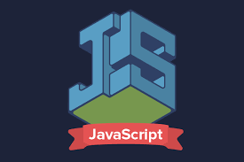

¿Que es Java Script?
Javascript es un lenguaje de programación que permite a los desarrolladores crear acciones en sus páginas web. ... No requiere de compilación ya que el lenguaje funciona del lado del cliente, los navegadores son los encargados de interpretar estos códigos
